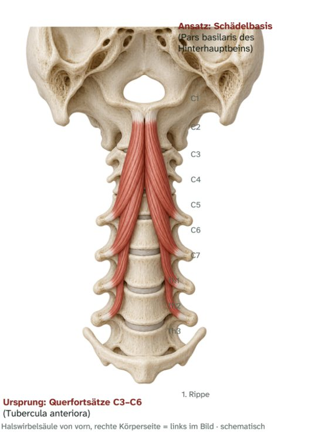

Halsmuskeln · prävertebral
M. longus capitis
Langer Kopfmuskel – Ursprung, Ansatz, Innervation und Funktion

Steckbrief
Steckbrief
- Ursprung
- Querfortsätze C3–C6 (Tubercula anteriora)
- Ansatz
- Schädelbasis (Pars basilaris des Hinterhauptbeins)
- Innervation
- Vordere Äste C1–C3
Funktion
- Beidseitig: Beugung des Kopfes und der oberen Halswirbelsäule (Kopfnicken).
- Einseitig: Drehung des Kopfes zur gleichen Seite (gering).
Zum Lernen

E-Book · Band 3 · 19,90 €
Muskel-Atlas Rumpf & Hals
Im E-Book findest du zu diesem Muskel außerdem:
- Merkhilfe und typische Prüfungsfalle
- Muskelfunktionstest, Längentest und Übungen per Video-QR-Code
- Dehn- und Kräftigungsübung
- Kurz-Check mit drei Fragen und Lösungen